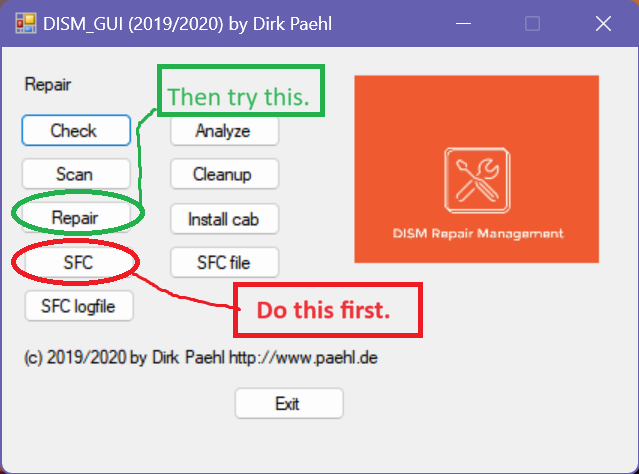

Tech Topics: Making Computer Life Easier
List of topics:
Windows 10 Will Expire on October 14, 2025!
Windows 10 will no longer be supported by Microsoft after October 14, 2025. This means that computers running Windows 10 will no longer receive protective security updates from Microsoft and will be extremely vulnerable to invasions of malware in all its forms. Options available to users are as follows:- For most computers produced in 2018 or later, upgrade to Windows. 11
- Subscribe to Microsoft's Extended Security Updates program. Cost is expected to be about $60 per computer for first year. Double for second year. Triple for third year.
- Install alternative operating system on computer: Linux or ChromeOS Flex.
- Purchase new computer, either PC running Windows 11, Chromebook, or MacBook.
Basic Knowledges for Operating a Windows Computer
Windows computers are complicated. Without certain basic knowledges, users will be tormented by being unable to perform basic tasks and by unexpected system messages requesting specific responses and actions. The knowledges contained in the following list are the minimum for anyone using a Windows PC, and are easily attainable from books available at local bookstores and by taking the excellent courses conducted at the Bowie Senior Center. Possession of these knowledges is essential for the computer club to assist you effectively at the computer help lab sessions.- Whether your computer is a desktop or a laptop
- Which version of Microsoft Windows is on your computer
- Your default Internet browser
- Which anti-virus
- Taskbar
- Start button
- Start menu
- How to add apps to taskbar
- Settings icon, Settings module
- WiFi/Ethernet icon (also – where is your router, where to find encryption key, how to enter the encryption key on your computer)
- File Explorer
- how to use the right-click to bring up secondary menus of options
- How to copy and paste files
- How to create new folders and organize your files
- How to visit a specific Web site
- How to use a search engine, (e.g., Google, Bing, or DuckDuckGo) to search for a topic on the Web
- How to download and install a program
- How to uninstall a program
- How to obtain a program from the Microsoft Store
- Your passwords (Microsoft account, email account, your special Websites)
- How to update your computer
How to acquire these basic knowledges
- Taking classes from the Bowie Senior Center
- Books (short paperbacks readily available for purchase)
- Web queries and YouTube videos on specific topics
- Online classes
- Download Quick Reference Cards (see below)
Quick Reference Cards
Downloadable reference guides are available for computer basics, Windows 10 & 11, Microsoft Office, Google Docs, Gmail, and Zoom.
Click here for a complete list along with one-click downloads.
The "Upside" of using a computer: backup and updateBackup! Backup! Backup!Without a backup system, it is almost certain that you will lose valuable data files from your computer without any opportunity of retrieving them. Backups take one of two forms:
Recommended free software for data backups include Perfect Backup and EaseUs Todo Backup For creating complete system images, many members of the club recommend Macrium Reflect. It is no longer free of charge, but the cost may be a small price to pay for the security of periodically creating a system image. It is good practice to create an image regularly once a month. Installing Windows UpdatesInstructions for bringing your version of Windows up to date can be found here. (Although the article describes the process for windows 10, it is equally applicable to Windows 11.) Windows 10 and 11 on many computers become out of date because of intermittent use of the computer or because the computer is not permitted to remain powered on for a sufficient period of time to complete the background processes of downloading and installing the update. The result is that the computer slows down dramatically while it attempts to complete the update process in the background. |
What's the Word? The password, that is!
Without the passwords for the computer login (i.e., the Microsoft account) and email account, access to the computer and the email account are essentially lost to the user. The same is true of Websites which the user frequents and that require logins (banks, Amazon.com, etc). Although in isolated cases these passwords can be retrieved, most of the time access is lost permanently. Email cannot be retrieved, the bank prohibits online access to the account.Users must write down their passwords in a safe place and identify to what those passwords correspond (e.g., computer login, Gmail, etc.). Passwords are case-sensitive: "BillyBob" is not the same as "billybob" and will not afford the required access. Additionally, users must record the username which is part of the login process. Often, the username is the user's email address, but not always.
The 4-digit PIN used for logging into the computer is not the passsord; it is simply a link to the actual password, and if the user forgets the PIN, he or she cannot log into the computer without the actual password. Simlilarly, Web browsers are usually configured to save the username and password for Websites to which the user has logged in previously. The asterisks that appear in the login dialog (**********) does not mean that the site does not require login credentials: it means that those credentials (i.e., the username and password) have been saved by the browser. If there is a problem accessing the site, or if the user obtains a new computer, these sites and the user's email account will require reentering the username and password. If the user has not kept a record of the username and password for the site, the login is usually lost permanently and cannot be retrieved except, occasionally, by complicated methods if at all.
Usually when login credentials are lost, no one can help you!
Maintaining Your Computer
How to prevent crashes and poor performance
Inherent to its design, computers with the Windows operating system tend to slow down over time to the point where they no longer perform acceptably. There are several causes, some of which can be mitigated by simple maintenance tasks performed periodically by users. The major factors contributing to the degradation of performance include the following:
- The increasing demands of the operating system and applications on older hardware.
Mitigation of this problem requires upgrades to the computer which may not be possible or cost effective on older computers. The solution is to migrate to a different operating system: Linux or ChromeOS Flex. - Unnecessary applications starting up with Windows during boot-up.
- Diversion of system resources to download and install updates which have previously been neglected.
- Accumulation of many file fragments and temporary (.tmp) files generated by Windows during its normal operation.
- Third party security suites and anti-malware programs, often installed through paid subscription, that utilize more resources than can be provided by older computers - especially computers with mechanical hard drives and less than 8GB RAM.
The built-in Windows Defender/Windows Security module provides adequate security for most users. If needed, this protection can be supplemented by the installation of Malwarebytes or Trend Micro Online Housecall, both of which are free and do not interfere with the built-in Windows Security application.
Simple periodic maintenance provided by several free utilities can dramatically improve performance with little effort required of the user. These utilities are the following:
- Microsoft PC Manager (available from the Microsoft Web Store)
- Disk Cleanup (built into Windows)
- DISM_GUI (free download from OlderGeeks.com)
Periodically using this relatively new application, available free from the Microsoft Store, can go far toward mitigating several of the key problems described above:
- Boosting performance
- Managing start-up apps
- Deep scanning and removing "garbage" files
- Conducting security scans
- Updating Windows
Disk Cleanup can be used as a supplement to PC Manager. It is built into Windows 10 and 11 and can be opened by typing "Disk Cleanup" into the search window on the tasbar or Start menu.
Running it once a month, right after PC Manager, is a good practice.
In contrast to the regular maintenance provided by PC Manager and Disk Cleanup, there may be problems that require a repair procedure for resolution. In such cases, the DISM_GUI utility, available from OlderGeeks.com, is an excellent tool. Among its utilities are two that previously required execution for the Windows command prompt: a practice with which many users are unfamiliar.
When severe problems persist after running PC Manager and Disk Cleanup, users should execute the "SFC" function in the left-hand column of the menu of DISM_GUI. Then reboot, and if the problem persists, execute the "Repair" function, also in the left-hand column of the DISM_GUI menu.
These functions are annotated in the screenshot below:
Following these suggestions should keep computers operating at their peak efficiency, limited only by the amount of RAM and the type of hard drive (mechanical vs. solid-state).
Web Browsers: More privacy, reduced advertising
Suggested Search Engine (alternative to Google search, to keep searches private)
DuckDuckGo
Suggested Extensions
uBlock Origin – Greatly reduces number of advertisements on Web pages.
Privacy Badger or Privacy Possum – Protects the user from unnecesssary tracking by Web sites.
Print Friendly & PDF - Makes a Printer Friendly & PDF version of any webpage. Removes navigation, ads, and junk.
Formats the page for print so you save paper and ink.
I Still Don’t Care About Cookies – Reduces number of annoying prompts requesting the use of cookies.
Installation of extensions: From within browser, click on the “Settings” icon. From the dropdown menu, click on extensions.
For browsers based on Google Chrome (e.g., Chrome and Brave), an alternative source is the Chrome Web Store.
Purchasing Your Next Laptop Computer: suggested criteria
Expect to pay a minimum of $550.00 for a new computer. Quality rises significantly in the range of $800 - $1000 (as of September, 2023).
Good used computers can be purchased as low as $150 - $400 and can provide a pleasant computing experience for those not doing action gaming, video editing, or certain types of software development.
New vs. used:
A new computer provides the latest improvements in performance and quality of display, albeit at a relatively high price.
In contrast, many used laptops, even as old as ten-years-old, are still fully functional and can provide several years of satisfactory service for office applications, surfing the Web, email, and even modest photo editing, video editing, and home publishing.
Besides offering substantial savings in price, they are environmentally friendly in that they do not require the additional depletion of raw materials and avoid the processing of additional electronic waste products. A Web search will produce many suggested criteria for evaluating used and refurbished products. (Note of interest: this Website was produced on a six-year-old laptop purchased several years ago from an online source!)
One factor to consider in purchasing a used laptop is that most are equipped with Windows 10, rather than Windows 11, and, those produced before 2018 will not support an upgrade to windows 11. Microsoft has announced that it will not provide additional security updates for Windows 10 after October 14, 2025. It is impossible to predict Microsoft will change its policy or whether software companies will create security software that circumvents this problem.
A list of some vendors of used laptops follows the table of criteria. The list, which is not all-inclusive) is not to be considered as a recommendation or endoresement of the sources or the products offered for sale. Users should thoroughly investigate the descriptions of the items and consider the return policies of the vendors.
Vendors’ Web sites may be located through a search engine (DuckDuckGo, Google, Bing, etc.)
New |
Used |
||
Spec |
Minimum |
Preferred |
Minimum |
Processor (CPU) |
Intel Core i5 or AMD Ryzen |
Intel Core i7 or AMD Ryzen |
Intel Core i5 or Ryzen |
Memory (RAM) |
8GB |
16GB |
8GB |
Storage (SSD) |
256GB |
512GB |
256GB |
Display |
14” |
14” or greater |
14” or greater |
Aspect ratio of screen |
16x9 - 1920x1080 |
16x10 - 1920x1200 |
16x9 - 1366x768 |
Sources of used laptops:
eBay.com
Mercari.com
Backmarket.com
Compu Computers (Glen Burnie, MD)
Micro Center (Rockville, MD)
Walmart.,com
PC Retro (pcretroshop.com)
The Chromebook Option:
The design of having most of the system processes running in the cloud, rather than on the local laptop, makes Chromebooks fast, simple, stable, and free of the need for constant maintenance and configuration. Most have no fan, so the resulting fan noise is not present. Many users find the absence of annoying updates and crashes to be a welcome departure from their experience with other operating systems. Chromebooks usually cost substantially less than Windows laptops, with popular configurations in the $350-$800 range. The transition from Windows to Chrome OS is considered simple, with a short learning curve. Many books are available in libraries and book stores, and YouTube videos abound. Worth considering if your usage patterns conform to the Chromebooks strengths. |
 If
you are considering a laptop, don't overlook the option of a
Chromebook. Chromebooks look just like laptops and come in the
same sizes: from 11.6" displays all the way to 17.3 inches,
with the most popular size being 14 inches. Two-in-one options are
available, along with touch screen options. The difference is that
the Chromebook uses Google's Chrome OS operating system rather
than Microsoft's Windows operating system. Nearly all of the
Chromebook’s processes run online, through the Chrome browser
and its related functional applications: Google Docs, Sheets,
Slides, and Photos. Files are stored by default on Google Drive,
although they can be downloaded to the built-in solid-state drive
in a format compatible with Microsoft Office files. The latest Chromebooks comply with the "Chromebook Plus" specification, and are the type recommended for best performance.
If
you are considering a laptop, don't overlook the option of a
Chromebook. Chromebooks look just like laptops and come in the
same sizes: from 11.6" displays all the way to 17.3 inches,
with the most popular size being 14 inches. Two-in-one options are
available, along with touch screen options. The difference is that
the Chromebook uses Google's Chrome OS operating system rather
than Microsoft's Windows operating system. Nearly all of the
Chromebook’s processes run online, through the Chrome browser
and its related functional applications: Google Docs, Sheets,
Slides, and Photos. Files are stored by default on Google Drive,
although they can be downloaded to the built-in solid-state drive
in a format compatible with Microsoft Office files. The latest Chromebooks comply with the "Chromebook Plus" specification, and are the type recommended for best performance.Alternatives to Windows
Users with older computers often find that the latest iterations of the Windows operating system no longer perform acceptably on their computers. Many other users are facing the expiration of Windows 10 on computers that do not support the upgrade to Windows 11. The answer to these problems is to change to a different operating system. Two such options exist that are free to use, require little if any learning curve, are much more resistant to faults, crashes, and malware than Windows, and perform much faster on older hardware. Additionally, these operating systems permit the access to nearly all user data files created under Windows and have applications that are free alternatives to those available in Windows. The two systems are Linux and ChromeOS Flex.
- Linux
Unlike Windows or MacOS, which have a single user interface, Linux comes in many varieties, such as Ubuntu, Linux Mint, Zorin, Manjaro, and more than a hundred others. These varieties are referred to as distributions, or more commonly,"distros." Each distro may offer one or more "desktop environments" for the user to choose. Examples are Cinnamon, Xfce, GNOME, KDE, and others.
Three such distros have been found to make for a particularly easy and seemless transition for Windows users:
- Linux Mint with the Cinnamon desktop
- Linux Mint with the Xfce desktop
- Linux Lite (offered only with the Xfce desktop)
Note: The option with the Cinnamon desktop runs best on computers with at least 4GB of RAM. The two options with the Xfce desktop can run well on computers with at least 2GB of RAM, although many users with computers of much greater capacity use it. Computers with less than 2GB are probably approaching their end of life.
Installing any operating system, including Windows, requires the same procedure: a file with an "ISO" filename extension (i.e., an "iso file") is downloaded from the Internet. A small, free application running in Windows is then used to "burn" the iso file to a flash drive. The user than boots from the flash drive, brining up a program which will overwrite Windows with the new operating system. Naturally, users should back up and data they wish to transfer to the new operating system or the data will be lost when Windows is overwritten.
Three such programs for "burning" the ISO to a flash drive include the following, all of which are free, simple to use, and work well:
Excellent videos that explain the recommended Linux versions to first-time users are available at Linux for Seniors. - ChromeOS Flex
The operating system used on Chromebooks can be installed on most laptops, thereby converting them to the same operating system and user interface found on Chromebooks. Installation is simple, and is described in detail here.
How to Organize Your Data Files
Everything search utility